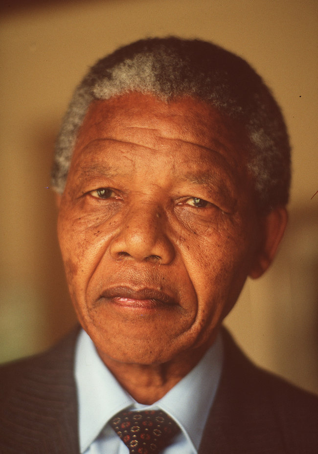

Nelson Rolihlahla Mandela
The Life and Legacy of Nelson Mandela: 1918-2013
Nelson Mandela’s quest for freedom in South Africa’s system of white rule took him from the court of tribal royalty to the liberation underground to a prison cell to the presidency.
Mandela Is Born
Rolihlahla Mandela is born in
Mvezo, a tiny village in the Transkei, a former British protectorate in the south. His father, Gadla Henry Mphakanyiswa, was a chief of the Thembu people, a subdivision of the Xhosa nation. The new child’s given name translates, colloquially, as troublemaker. He receives his more familiar English name, Nelson, from a teacher at age
7.
Attends University of Fort Hare
Mr. Mandela is admitted to the
University of Fort Hare, a black institution. Two years later he will be expelled for leading a student protest.
First Marriage
Mr. Mandela marries
Evelyn Ntoko Mase. The couple will have four children, but Mr. Mandela’s political activities will put a strain on the relationship. The couple will divorce in
1958.
During Trial, a Second Marriage
In the midst of Mr. Mandela’s trial on treason charges, he marries Nomzamo Winifred Madikizela, 16 years his junior. The tumultuous union will produce two daughters and a national drama of forced separation, devotion, remorse and acrimony.
Recurring Health Problems Stir Global Concern
Mr. Mandela is hospitalized for nearly 19 days, being treated for pneumonia and having an operation for gallstones, government officials say. He will be hospitalized several times in 2013, as an increasingly
ugly battle over his legacy and money erupts.
Even the African National Congress, the party to which Mr. Mandela dedicated his life, will come under harsh criticism for
releasing a video of party leaders visiting the visibly ailing former president.
Mr. Mandela contracted tuberculosis during his 27-year imprisonment for fighting apartheid, and he has suffered from chronic lung problems.
Mandela Dies at 95
The government announces that Mr. Mandela has died, leaving the nation without its moral center at a time of growing dissatisfaction with the country’s leaders.
“
Our nation has lost its greatest son,” President Jacob Zuma said in a televised address late Thursday night, adding that Mr. Mandela had died at
8:50 p.m. local time.
For more information, check out
Nelson Mandela
on Google.